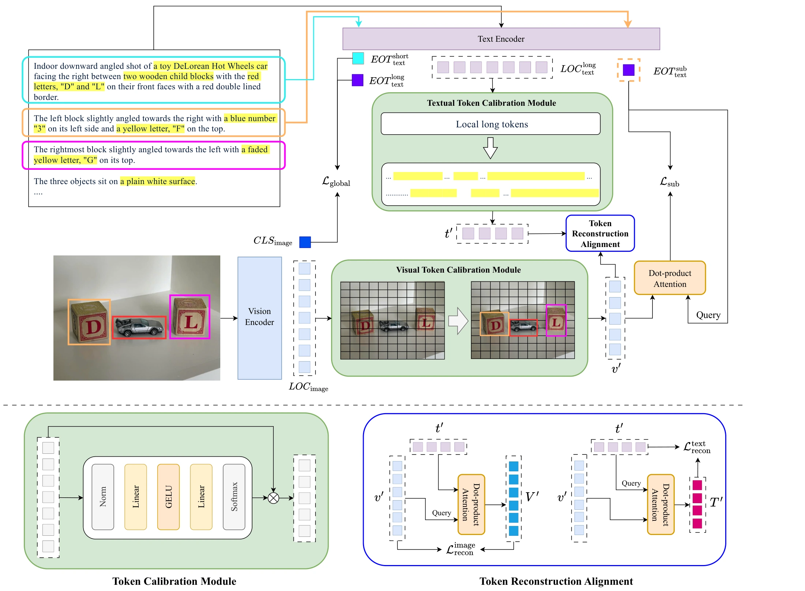
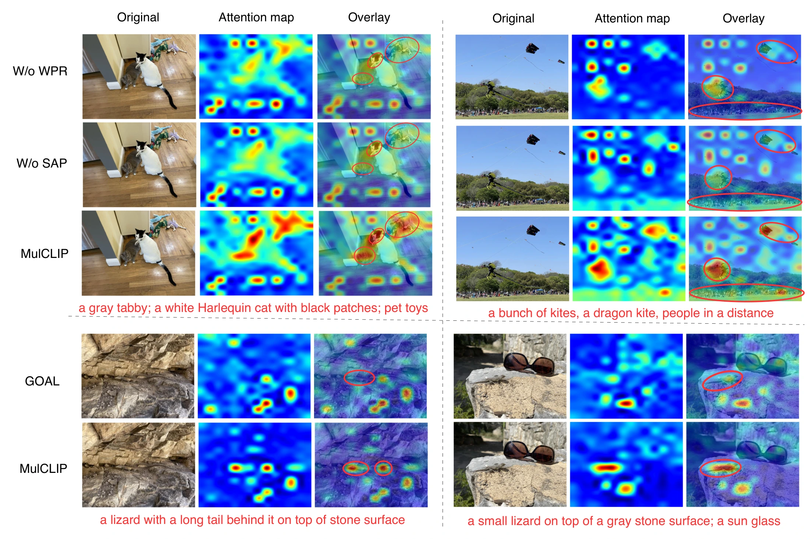
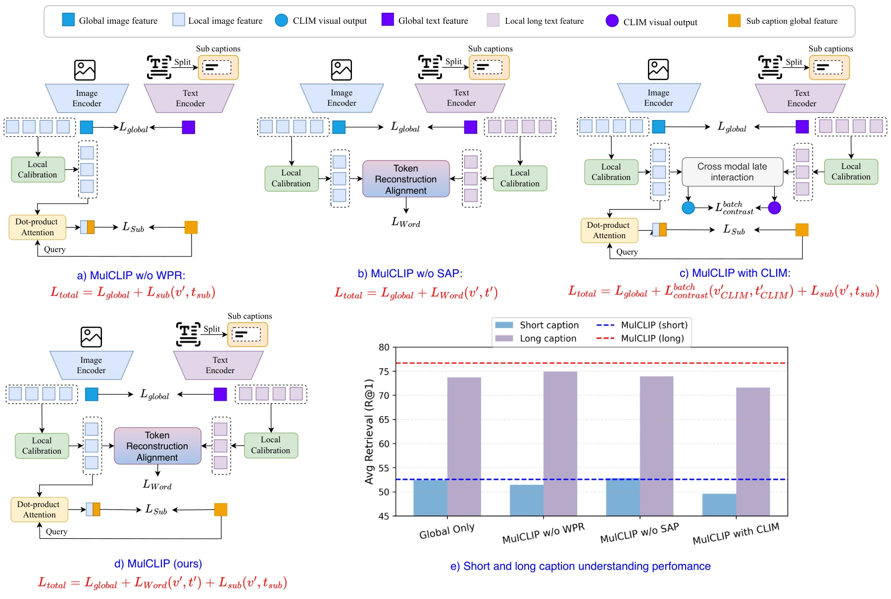

Ablation · R@1
ViT-B/16Long-caption understanding
Values average text→image and image→text R@1. The complete model achieves the strongest overall average.
Long descriptions mix entities, attributes, relations, and broader facts. MulCLIP gives each granularity an objective designed for the structure it needs to learn.
ℒtotal = ℒglobal + λWℒWord + λSℒSubλW = λS = 1
MulCLIP aligns the same image–text pair at caption, word, and subcaption levels with compatible objectives.
MulCLIP improves long-caption retrieval across DOCCI, DCI, and Urban-1K, while preserving the short-text and classification behavior that makes CLIP useful.
Values average text→image and image→text R@1. The complete model achieves the strongest overall average.
Query-conditioned maps show more concentrated activation on the fine-grained visual evidence described in text. Red circles mark the regions where localization improves.

Original image, heatmap, and overlay are shown for each query and model variant.
Replacing WPR’s within-sample reconstruction with batch-wise CLIM drops long-caption average R@1 from 76.67 to 71.60. More supervision is not automatically better when objectives compete in the same token space.

The camera-ready paper, code, models, and citation will be released here. This preview contains no anonymous submission material.